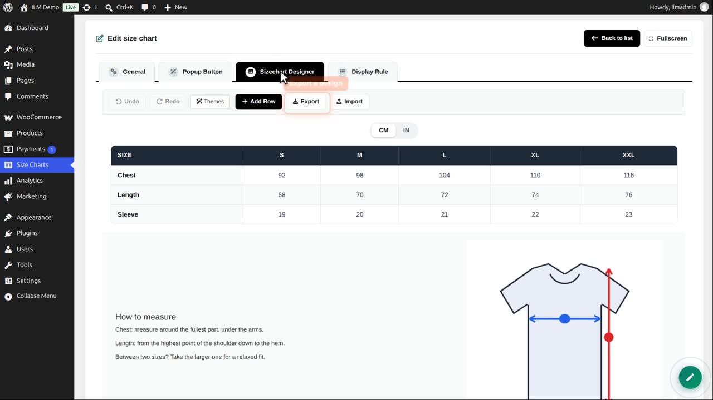
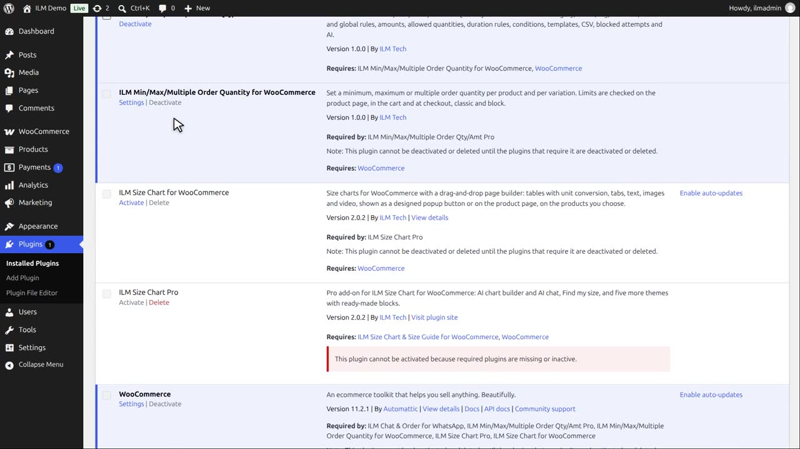

Deactivating stops the plugin and keeps your charts. Deleting the plugin removes its size charts, settings and uploaded pictures from your site. To keep a design, save it first with Export in the designer. If you also use the Pro add-on, delete it first: WordPress keeps the free plugin until the add-on that needs it is gone.
The free plugin sends no data to ILM Tech and has no tracking. Some content loads from other sites, and only when you use it:
Deleting the plugin deletes all size charts and their settings. To keep a design, export it first with Export in the designer.

On the Plugins page, deactivate ILM Size Chart. The shop no longer shows any size chart, but nothing is deleted yet.

Then delete ILM Size Chart. This also deletes its size charts, settings and uploaded pictures. To use it again, install it as shown in the install video.